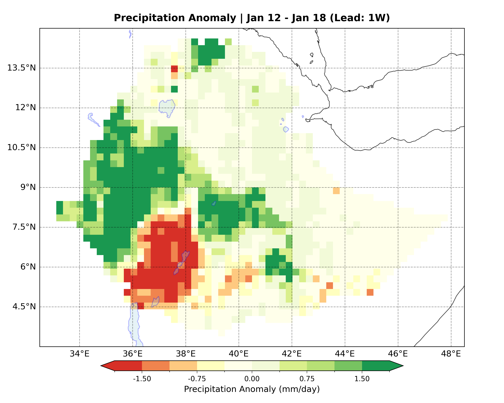
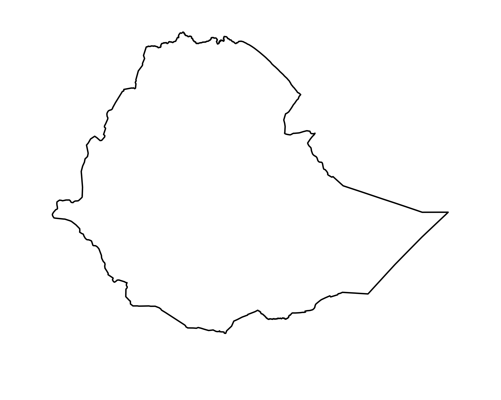
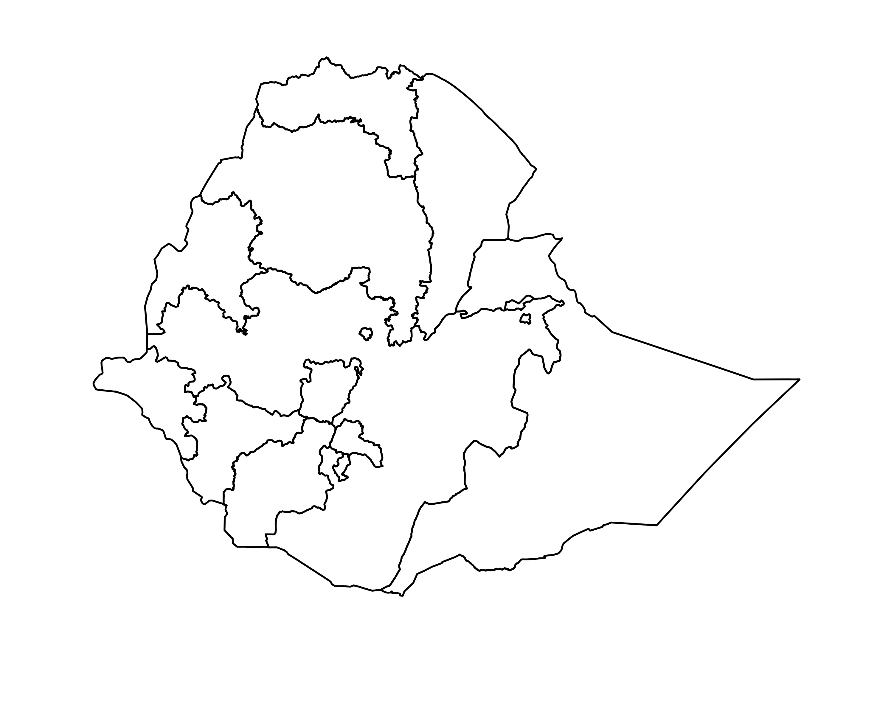
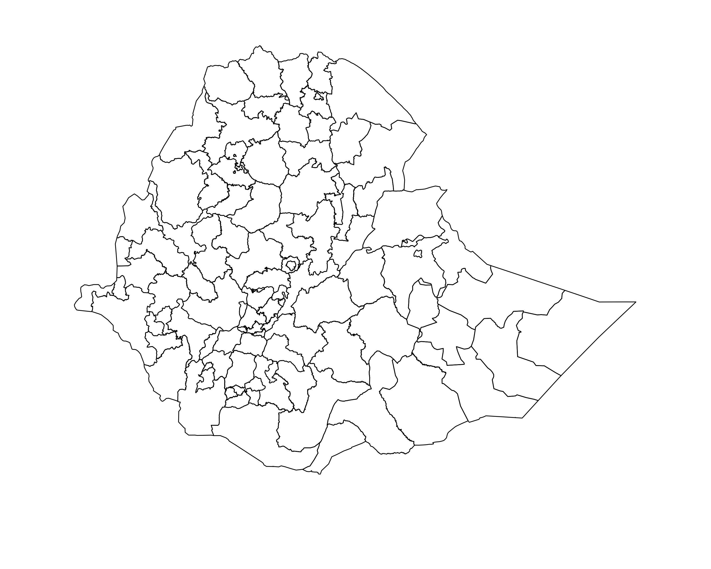
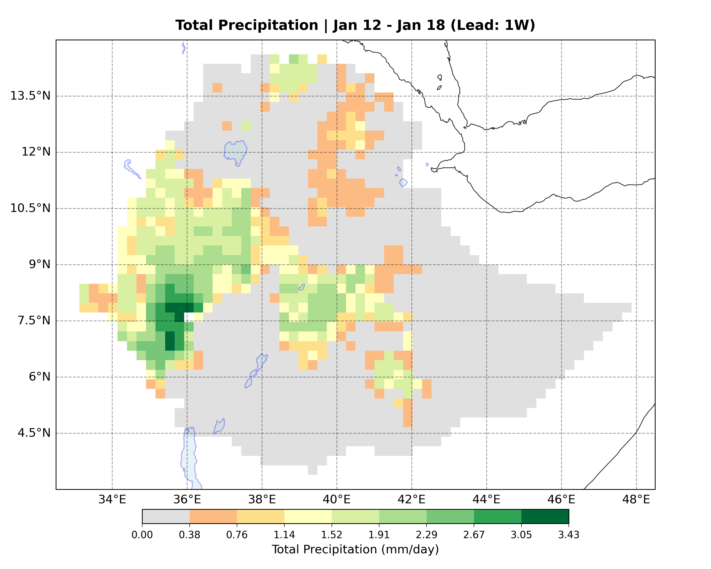
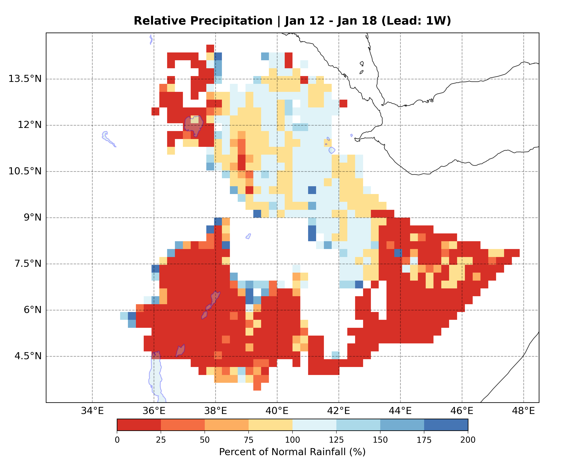
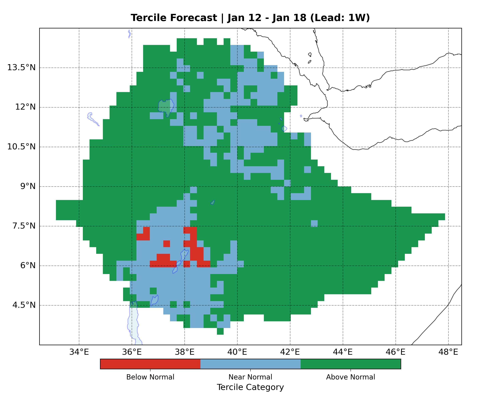

Real-time deep learning predictions for precipitation anomalies, totals, and probabilities.




Identifying regions of critical rainfall deficit or surplus by calculating deviation from the mean in physical units (mm/day).

The total expected water volume reaching the surface. Reconstructed from the learned anomaly and regional seasonal baseline data.

Relative intensity expressed as a percentage of the long-term climatological expectation (100% = Normal).

Probability classification into Below Normal (Drought Risk), Near Normal, or Above Normal (Flood Risk) categories.